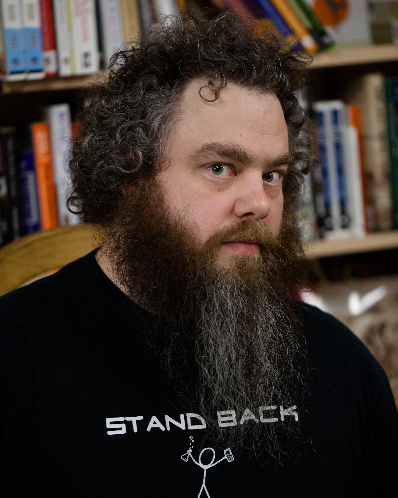

Sinopsis
En una posada en tierra de nadie, un hombre se dispone a relatar, por primera vez, la auténtica historia de su vida. Una historia que únicamente él conoce y que ha quedado diluida tras los rumores, las conjeturas y los cuentos de taberna que le han convertido en un personaje legendario a quien todos daban ya por muerto: Kvothe# músico, mendigo, ladrón, estudiante, mago, héroe y asesino. Ahora va a revelar la verdad sobre sí mismo. Y para ello debe empezar por el principio: su infancia en una troupe de artistas itinerantes, los años malviviendo como un ladronzuelo en las calles de una gran ciudad y su llegada a una universidad donde esperaba encontrar todas las respuestas que había estado buscando. «Viajé, amé, perdí, confié y me traicionaron.» «He robado princesas a reyes agónicos. Incendié la ciudad de Trebon. He pasado la noche con Felurian y he despertado vivo y cuerdo. Me expulsaron de la Universidad a una edad a la que a la mayoría todavía no los dejan entrar. He recorrido de noche caminos de los que otros no se atreven a hablar ni siquiera de día. He hablado con dioses, he amado a mujeres y he escrito canciones que hacen llorar a los bardos. »Me llamo Kvothe. Quizá hayas oído hablar de mí.»
Biografía

Patrick James Rothfuss (nacido el 6 de junio de 1973) es un escritor estadounidense de fantasía y profesor adjunto de literatura y filología inglesa en la Universidad de Wisconsin. Es el autor de la serie Crónica del asesino de reyes, que fue rechazada por varias editoriales antes de que el primer libro de la serie El nombre del viento fuese publicado en el año 2007. Obtuvo muy buenas críticas y se convirtió en un éxito de ventas.
Patrick Rothfuss nació en Madison (Wisconsin) y se convirtió en un asiduo lector en parte debido al mal tiempo y a la falta de televisión por cable.Se matriculó en la Universidad de Wisconsin-Stevens Point en 1991. En la universidad originalmente pensaba estudiar ingeniería química, pero cambió de opinión al encontrarla poco afín para sí, y pasó los siguientes semestres estudiando cualquier asignatura que le interesara. Tras nueve años en la universidad, invirtió sus esfuerzos en graduarse y terminó con un título de filología inglesa.
Durante esta época se dedicó a trabajar en diversos y extraños trabajos, y al mismo tiempo se dedicó a trabajar en una novela de fantasía extremadamente larga llamada The Song of Flame and Thunder.También comenzó a escribir la "Guía de supervivencia en la universidad" en una columna de The Pointer, el periódico del campus.
Después realizó un máster en la Universidad Estatal de Washington, y regresó dos años después para dar clases en Stevens Point.